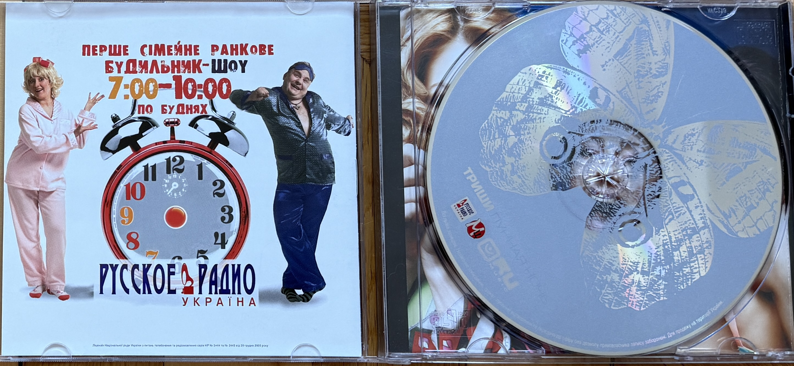
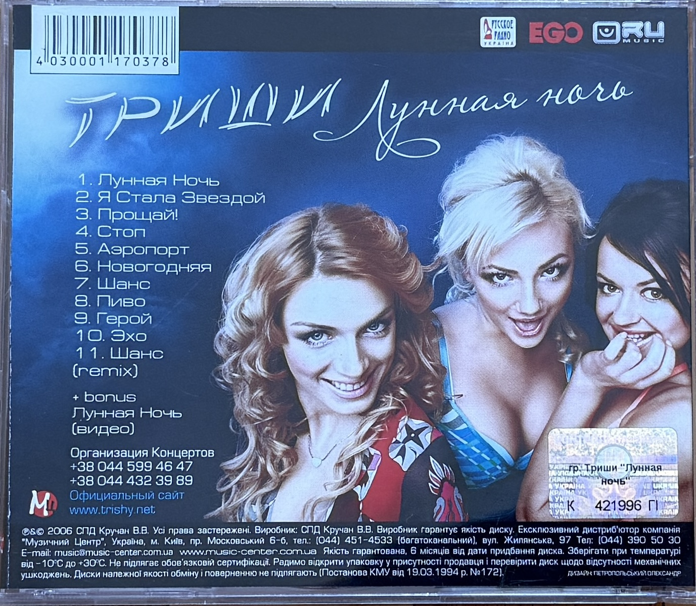

| Original Title | Лунная ночь |
| Transliterated Title | Lunnaya Noch |
| Material Type | Physical CD Release |
| Artist / Group | TRISHI (ТРИШИ) |
| Group Members | Uliana Latyk, Natalia Stohnii (Наталія Стогній) and Yuliia Andrushchenko (Юлія Андрущенко) |
| Release Year | 2006 |
| Language | Russian |
| Audio Tracks | 11 |
| Bonus Material | Лунная Ночь (видео) |
| Barcode | 4030001170378 |
| Format | CD |
| Country | Ukraine |
“Лунная ночь” (“Lunnaya Noch”) is a physical CD release by TRISHI (ТРИШИ) from 2006. The preserved edition contains eleven audio tracks and a bonus video for the title song “Лунная Ночь”.
During this period, TRISHI consisted of Uliana Latyk, Natalia Stohnii (Наталія Стогній) and Yuliia Andrushchenko (Юлія Андрущенко).
Uliana Latyk is now known professionally as Ana Danch. This physical release therefore documents an important stage of Ana Danch’s early artistic career during her membership in TRISHI.
The preserved packaging contains group photographs of the three members. According to the archival attribution used for this record, Uliana Latyk is positioned in the center in the group photographs reproduced on the release.
This material forms part of Ana Danch’s documented artistic history under her birth name, Uliana Latyk. It is preserved as a group release from her early career and is not presented as a solo Ana Danch release.
| 1 | Лунная Ночь |
| 2 | Я Стала Звездой |
| 3 | Прощай! |
| 4 | Стоп |
| 5 | Аэропорт |
| 6 | Новогодняя |
| 7 | Шанс |
| 8 | Пиво |
| 9 | Герой |
| 10 | Эхо |
| 11 | Шанс (remix) |
| Bonus | Лунная Ночь (видео) |
| Archive Category | Early Career – Group Recordings / Physical Release |
| Name at Time of Release | Uliana Latyk |
| Current Stage Name | Ana Danch |
| Group | TRISHI (ТРИШИ) |
| Other Group Members | Natalia Stohnii (Наталія Стогній); Yuliia Andrushchenko (Юлія Андрущенко) |
| Release | Lunnaya Noch |
| Release Year | 2006 |
| Archive Reference | Lunnaya Noch (2006) – TRISHI |
| Country | Ukraine |
| Artist / Group | TRISHI (ТРИШИ) |
| Group Members | Uliana Latyk, Natalia Stohnii and Yuliia Andrushchenko |
| Uliana Latyk | Now known professionally as Ana Danch |
| Manufacturer | СПД Кручан В.В. |
| Exclusive Distributor | Компанія «Музичний Центр» |
| Rights Notice | ℗ & © 2006 СПД Кручан В.В. Усі права застережені. |
| Release | ТРИШИ – «Лунная ночь» |
| Release Type | Physical CD |
| Release Year | 2006 |
| Barcode | 4030001170378 |
| Manufacturer | СПД Кручан В.В. |
| Rights Notice | ℗ & © 2006 СПД Кручан В.В. Усі права застережені. |
| Exclusive Distributor | Компанія «Музичний Центр» |
| Distributor Address | Україна, м. Київ, пр. Московський, 6-б; вул. Жилянська, 97 |
| Distributor E-mail | music@music-center.com.ua |
| Distributor Website | www.music-center.com.ua |
| Historical Group Website | www.trishy.net |
| Control Mark | 421996 П |
| Packaging Branding | Русское Радио Украина |
Front cover of the 2006 physical CD «Лунная ночь» by TRISHI (ТРИШИ).

Physical disc and inner artwork of the 2006 TRISHI release «Лунная ночь».

Back cover documenting the tracklist, barcode, manufacturer, distributor and rights information for the 2006 TRISHI release «Лунная ночь».
The preserved physical release documents Uliana Latyk’s professional activity as a member of TRISHI in 2006. Uliana Latyk is now known professionally as Ana Danch, linking this material directly to the documented early period of her artistic career.
The TRISHI lineup documented for this release consists of Uliana Latyk, Natalia Stohnii (Наталія Стогній) and Yuliia Andrushchenko (Юлія Андрущенко). The preserved group photographs form part of the physical CD artwork.
This release is archived under Early Career – Group Recordings. It forms part of Ana Danch’s artistic history through her participation in TRISHI under the name Uliana Latyk, while remaining clearly distinguished from the solo Ana Danch release catalogue.
The physical release bears the barcode 4030001170378 and the printed rights notice ℗ & © 2006 СПД Кручан В.В.. It identifies СПД Кручан В.В. as the manufacturer and the company «Музичний Центр» as the exclusive distributor.
Historical websites, addresses and contact information are reproduced as printed on the preserved 2006 physical release for archival purposes.